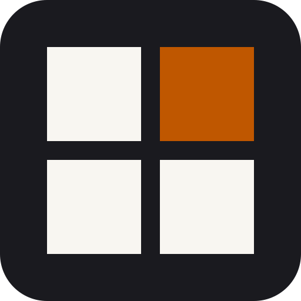
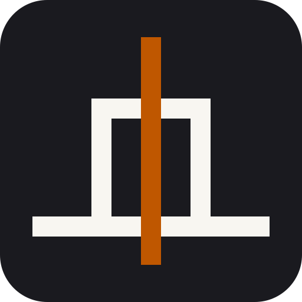
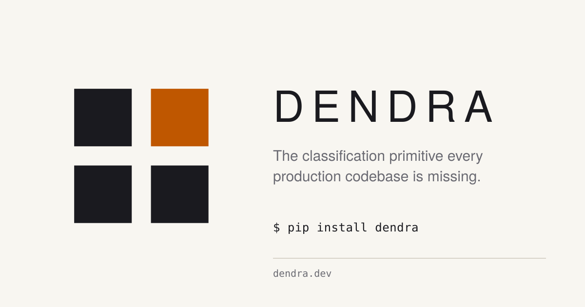
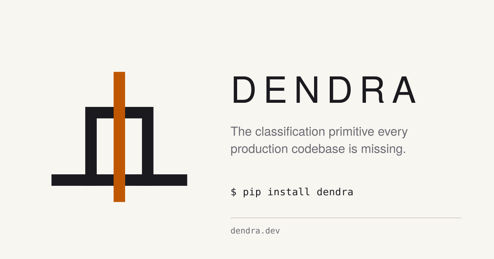
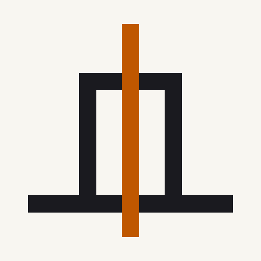
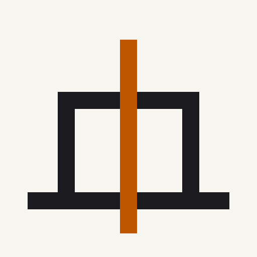
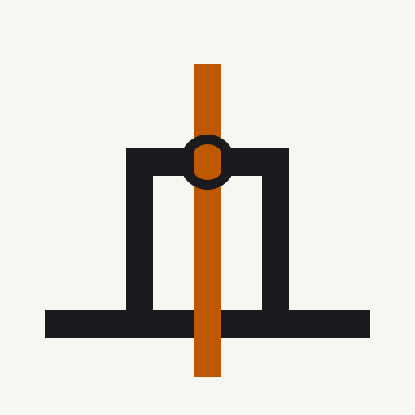
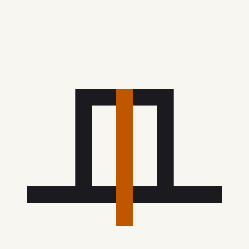

16Both are strong. They argue different things. This page puts them in the contexts they'll actually live in — favicon tiles, circular avatars, Open Graph social cards, landing header — so the choice can be made on what the mark does in the world, not what it looks like in isolation.
"We make a bet among four possibilities. One specific outcome is where we invest."
The 2×2 McNemar table rendered as four cells. Three graphite, one accent. The geometry IS the product's math. Reads as a window, a pixel, a confusion matrix, a crosshair — distinctly not a tree, a chart, or a neural net. Only mark in the round that couldn't be lifted wholesale into a competitor's identity.
"Evidence crosses a threshold. The rule remains underneath."
A rule-floor, a phase gate, an accent tick that parts the floor and rises through the gate. The mark literally argues the theorem: the floor is not broken but crossed at a measured point, which is exactly what a McNemar rejection does to the null. Architectural, gestural, dynamic.

16
16

Four additional executions of D2' exploring different dimensions — proportion (taller torii, wider gate), vocabulary-integration (threshold-crossing ring), and gesture-scale (restrained accent). E is shown next to each for reference at the same size.




Both marks are defensible. The real question isn't which is better — it's which story do you want Postrule's brand to tell first?
E tells the math story. First read: "we're an AI-innovation company with a specific claim about a specific cell of a specific table." It lands hardest on people who recognize the contingency-table structure — the research audience and ML-literate engineering leaders. Safer against brand-category-cliché, more fragile against first-time viewers who just see "a grid icon."
D2' tells the infrastructure story. First read: "we're the thing that gates ML-advancement safely, with a rule floor underneath." It lands hardest on procurement-desk audiences and anyone primed to think of classification as a safety problem. Safer against first-read confusion, more exposed to the Π-shape's generic risks (gate, goalpost, monument).
Either works. The right call depends on which audience the first 12 months of Postrule's brand needs to reach hardest — researchers + engineering leaders (E), or infrastructure + procurement desks (D2').